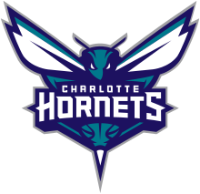
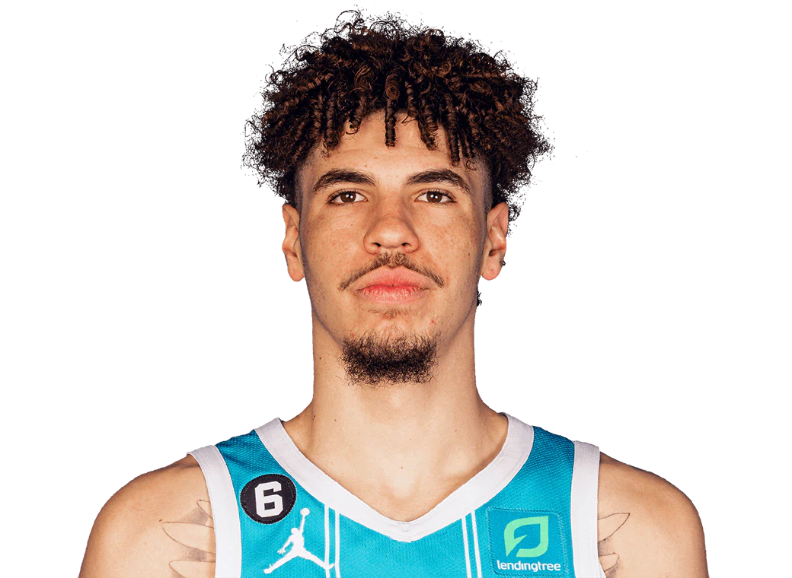

Charlotte Hornets

Charlotte Hornets so ameriška profesionalna košarkarska ekipa s sedežem v mestu Charlotte v Severni Karolini. Hornetsi tekmujejo v Nacionalni košarkarski zvezi (NBA) kot član vzhodne konference jugovzhodne divizije lige in igrajo svoje domače tekme v Spectrum Centru v Uptown Charlotte. Hornetsi so večinoma v lasti košarkarske hiše slavnih Michaela Jordana, ki je leta 2010 pridobil kontrolni delež v ekipi. Franšiza Charlotte Hornets je bila ustanovljena leta 1988 kot razširitvena ekipa v lasti Georgea Shinna. Leta 2002 je Shinn preselil Hornetse v New Orleans kot razširitveno ekipo. Še naprej so igrali kot Hornets do leta 2013, ko so spremenili ime v New Orleans Pelicans. Kot del dogovora z NBA se je Charlotte vrnila za sezono NBA 2004–05, znano kot Charlotte Bobcats.[10] Leta 2013 so Bobcats napovedali, da bodo s sezono 2014–15 preimenovali v Charlotte Hornets. Na dan, ko je sprememba imena postala uradna, je franšiza ponovno zahtevala zgodovino in zapise prvotnih Charlotte Hornets od leta 1988 do 2002. Posledično liga meni, da so Hornetsi za nazaj prekinili delovanje od leta 2002 do 2004. Leta 1985 je NBA načrtovala, da se bo do sezone 1988–89 razširila za tri ekipe, kasneje spremenjena tako, da bo vključevala skupno štiri razširitvene ekipe. George Shinn, podjetnik iz Kannapolisa, je želel pripeljati ekipo lige NBA na območje Charlotte in je zbral skupino uglednih lokalnih poslovnežev, da bi vodili bodočo franšizo. Območje Charlotte je bilo dolgo žarišče univerzitetne košarke. Charlotte je bil tudi eno najhitreje rastočih mest v Združenih državah in je bil prej eden od treh regionalnih domov Ameriške košarkarske zveze (ABA) Carolina Cougars od leta 1969 do 1974.
Trenutna ekipa

18. novembra 2020 so Hornetsi kot tretji izbrali LaMelo Ball. Hornetsi so v drugem krogu nabora lige NBA leta 2020 izbrali tudi Vernona Careya Jr. in Granta Rillerja. 29. novembra 2020 bi Hornets kupili Gordona Haywarda v podpisu in menjavi pogodbe z Boston Celtics. Hornetsi so sezono 2020–21 končali na 10. mestu na vzhodu s skupnim rezultatom 33–39. 16. junija 2021 je bil Ball imenovan za novinca leta lige NBA 2020–21 in tako postal tretji igralec v zgodovini franšize, ki je prejel to nagrado. 7. februarja 2022 je bil Ball imenovan za svojo prvo NBA All-Star tekmo kot zamenjava za Kevina Duranta po poškodbi. Hornetsi bi drugič zapored osvojili mesto na play-in turnirju, čeprav so izgubili proti sovražniku iz jugovzhodne divizije proti Atlanta Hawks s 132–103. 22. aprila 2022 so Hornetsi po štirih sezonah v ekipi odpustili glavnega trenerja Jamesa Borrego. Ekipa je sezono 2021–2022 končala s skupnim rezultatom 43–39. 24. junija 2022 so Hornetsi za novega glavnega trenerja imenovali Steva Clifforda, ki je že drugič postal glavni trener ekipe. Med pomembnejšimi dodatki med sezono sta bili nabor centra Dukea Marka Williamsa kot 15. izbor na naboru lige NBA 2022 in podpis pogodbe s prostim agentom, igralcem točke in domačinom iz Severne Karoline Dennisom Smithom Jr. Med sezono NBA 2022-23 je Hornets utrpela poškodbe večine članov nabora, kar je privedlo do slabe sezone, ki se je končala z rezultatom 27-55, četrtim najslabšim v ligi. Vendar je Mark Williams dokazal svoj ogromen potencial. Zaradi slabega zaključka so Hornetsi dobili drugi izbor na naboru lige NBA leta 2023.